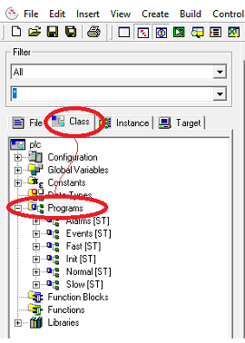

In the “Class” tab it is possible to expand “Programs” where the default program in ST language are.

Double clicking on a program a windows opens in the right side where to write ST code to make the automation.
To use local variables it is necessary to declare them in the space between VAR and END_VAR, for example: pippo : bool;
After defining the local variable it is possible to use it in the program, while for global variables (inside “Crosstable.gvl” file generated by “Crosstable Editor”) can be used directly in every program using their names.